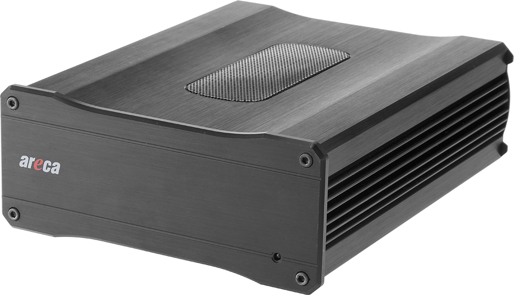
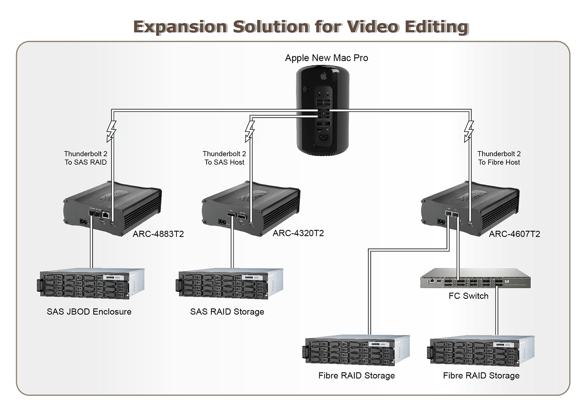

ARC-4050T2 series
(Thunderbolt™ 2 Adapters)
ARC-4320T2: Thunderbolt 2 to 6Gb/s SAS Host Adapter
ARC-4607T2: Thunderbolt 2 to 16 Gbps FC Adapter
ARC-4883T2: Thunderbolt 2 to 12Gb/s SAS RAID Controller
Host Interface
2 x Thunderbolt 2 ports
Management Interface
Thunderbolt port
1 x LAN RJ-45 connector (for ARC-4883T2)
External Ports
[ARC-4320T2] 8 x 6Gb/s SAS ports
[ARC-4607T2] 2 x 16 Gbps Fibre Channel ports
[ARC-4883T2] 8 x 12Gb/s SAS ports
Thunderbolt™ 3 to 12Gb/s SAS RAID Storage

The ARC-4050T2 series are Thunderbolt™2 expansion chassis with one PCIe 2.0 slot to fit a low profile adapter for high-performance 4K video editing and networking. By supporting Thunderbolt-compatible low profile PCIe adapters, the ARC-4050T2 expansion enables professionals to use high-performance PCIe adapters or RAID adapters on the lacking PCIe expansion new Mac Pro. Supported adapters include Areca 10G Ethernet, 16Gbps Fibre Channel, 6Gb/s SAS Host as well as 12Gb/s SAS RAID controllers. Designed and leveraged with Areca’ existing high performance internal PCIe adapters, Areca’s family of Thunderbolt 2 products provide a perfect outside-the-box solution for your 4K deployments.
With dual 12Gb/s SAS ports and dual 20Gbps Thunderbolt 2 ports configurations, the ARC-4883T2 is an ideal solution to connect a high- performance RAID controller with JBOD enclosure for users looking to achieve the highest I/O and data throughput for 4K workflows.
With dual 6Gb/s SAS ports and dual 20Gbps Thunderbolt 2 ports configurations, the ARC-4320T2 is an ideal solution to connect a high-speed SAS RAID subsystem for users looking to achieve the highest I/O and data throughput for 4K workflows.
With dual 16Gbps Fibre Channel ports and dual 20Gbps Thunderbolt 2 ports configurations, the ARC-4607T2 is an ideal solution to connect a high-speed Fibre Channel SAN for users looking to achieve the highest I/O and data throughput for 4K workflows.
| Thunderbolt™ 2 to PCIe Expansion Solution | |||
| ARC-4320T2 | ARC-4607T2 | ARC-4883T2 | |
| Form Factor | Mini Box | ||
| Host Connection | Dual 20Gbps Thunderbolt ports - Dual-Protocol (PCIe and DisplayPort) - Daisy chaining device support |
||
| Controller Inside | ARC-1320-8x 6Gb/s SAS Host Adapter | ARC-8607 16Gb/s Fibre Host Adapter | ARC-1883x 12Gb/s SAS RAID Adapter |
| Ports | 8 x external | 2 x external | 8 x external |
| External Connectors | 2 x Mini-SAS HD SFF-8088 | 2 x SFP+ | 2 x Mini-SAS HD SFF-8644 |
| Data Transfer Rates | Up to 6 Gb/s per port | Up to 1600 MB/s per port | Up to 12 Gb/s per port |
| Cooling Fan | 1 x 2700rpm | ||
| Power Supply/In/out | 100-240V AC/65W | ||
| Physical Dimensions (H x W x D) |
4.97 x 2.13 x 6.35 in (150 x 64.4 x 191.7 mm) |
||
| Weight | 2.64 lbs / 1.2 Kg | ||
| OS Support | OS X 10.8.5, 10.9 (Mavericks) or later, Windows 7/8/10 | ||
Downloads
| File | Version | Date |
|---|---|---|
| ARC-4050T2 series Specification | 1.0 |
2014/12/22 |
| ARC-4320T2 User Manual | 1.0 |
2015/07/16 |
| ARC-4320T2 Quick Installation Guide | 1.0 |
2015/07/16 |
| ARC-4607T2 Specification | 1.0 |
2014/12/26 |
| ArcSAP_QFC Manual (for ARC-4607T2) | 1.0 |
2017/12/06 |
| ARC-4607T2 Quick Installation Guide | 1.0 |
2014/12/22 |
| ARC-4883T2 User Manual | 1.0 |
2014/12/23 |
| ARC-4883T2 Quick Installation Guide | 1.0 |
2014/12/23 |
| SAS Host CLI Manual (for ARC-4320T2) | 1.0 |
2011/11/05 |
| ArcSAP_HBA User Manual (for ARC-4320T2) | 1.0 |
2015/07/24 |
| CLI Utility User Manual (for ARC-4883T2) | 5.1 |
2020/04/20 |
| ArcSAP User Manual (for ARC-4883T2) | 4.2 |
2020/11/03 |
| File | Version | Date |
|---|---|---|
| ARC-4320T2 BIOS | 2.0 |
2018/07/10 |
| ARC-4607T2 firmware | 8.0.3 |
2017/02/02 |
| ARC-4883T2 firmware | 1.56 |
2021/07/12 |
|
1. Patch HGST G3 enclosure SES2 firmware update problem 2. Seagate XS960SE70004 firm rev 002, 960GB SSD problem 3. Add progress % for some http operation 4. Fix SEAGATE 84bay JBOD does not report slot string 5. Improve FAIL_DRIVE_IF_MANY_ERROR |
||